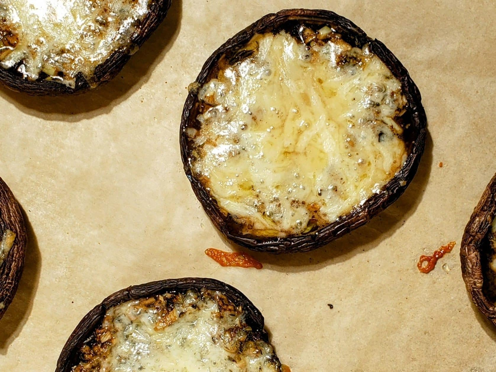

Cheesey Mushroom
Odin Recipes
cheesey mushroom

Description
This cheesey mushroom recipe is a quick, simple, and yummy choice for lunch or dinner! With large portebello mushrooms, some cheddar cheese, and some seasoning, you'll have your whole family drooling for more!
This recipe takes about 35 minutes to complete.
Ingredients
- 6 large portebello mushroom caps
- 3 tbsp olive oil
- 2 tbsp minced garlic
- 1 tsp dried thyme
- 1 tbsp basalmic vinegar
- 1/4 tsp Kosher salt
- 1/4 tsp black pepper
- 3 oz sharp cheddar cheese
Steps
- Pre-heat oven to 400 degrees
- Wipe or softly brush mushroom caps clean with paper towel. Do not wash.
- Gently rub outside with 1 tbsp olive oil using your hands or a brush.
- Mixtogether garlic, thyme, basalmic vinegar, salt, pepper, and the rest of the olive oil.
- Place mushroom caps gill side up on the baking sheet.
- Drizzle the marinade inside the caps.
- Bake for 15 minutes
- Remove from oven and spread the cheese on each cap
- Return to oven and bake another 5 minutes or until cheese is bubbly.